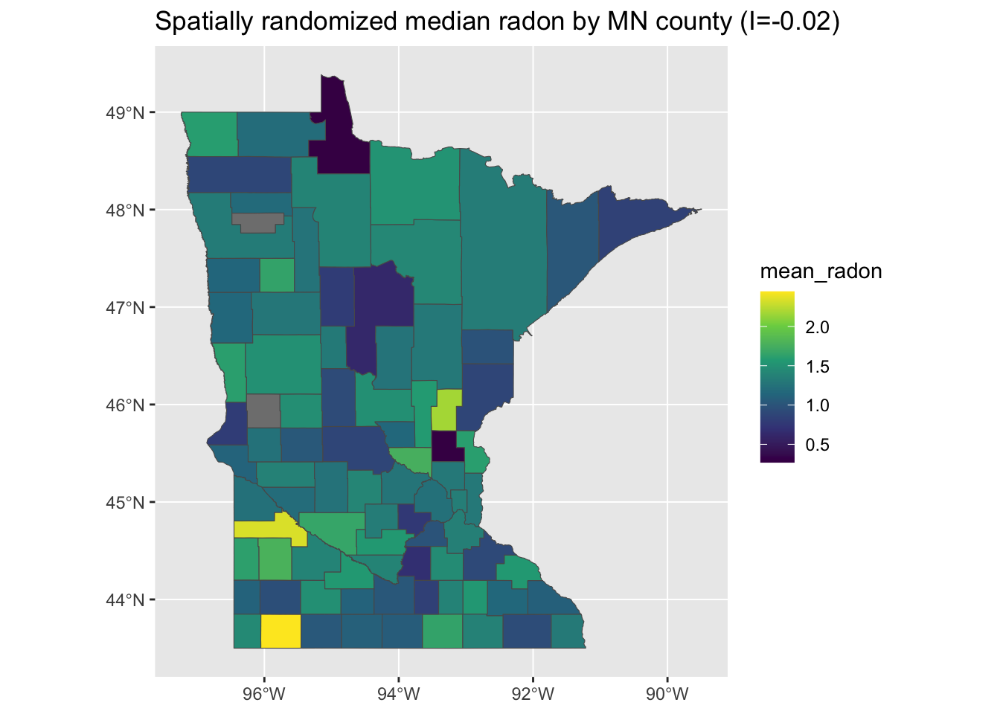

Code
library(ggplot2)
library(arm)
library(tidycensus)
library(dplyr)
library(rstanarm)
library(stringr)
library(spdep)
knitr::opts_chunk$set(message = FALSE, warning = FALSE, tidy = TRUE)radon dataThis tutorial is a follow-up to a prior exercise using these data. So if you haven’t already, please go back and take a look at the original multi-level modeling radon example in Section 6.1.
The primary goals of this tutorial are to introduce you to:
If you see a box with a üí° like this, it‚Äôs in an invitation to go a bit further. This could be a conceptual question or a chance to write a bit of code to explore the data or outputs of the analysis a bit more.
library(ggplot2)
library(arm)
library(tidycensus)
library(dplyr)
library(rstanarm)
library(stringr)
library(spdep)
knitr::opts_chunk$set(message = FALSE, warning = FALSE, tidy = TRUE)Before diving into the analysis steps, there are several key things we need to do to be able to easily work with these data.
First, we need to download a shapefile for the state of Minnesota in which each polygon represents an individual county. Thankfully, in R, this is made easy using the excellent tidycensus package:
options(tigris_use_cache = TRUE)
minnesota <- get_acs(state = "MN", geography = "county", variables = "B19013_001",
geometry = TRUE, year = 2020)Tidycensus gives us the data as an sf dataframe containing a number of fields including population estimates, which we can plot straightforwardly using the plot function supplied by the sf package:
plot(minnesota["estimate"])In its raw form, this spatial dataset isn’t quite ready to merge with the radon data. If we take a peek at the county names in the shapefile, we can see that they don’t quite match the formatting of the ones in the original data:
head(sort(minnesota$NAME))[1] "Aitkin County, Minnesota" "Anoka County, Minnesota"
[3] "Becker County, Minnesota" "Beltrami County, Minnesota"
[5] "Benton County, Minnesota" "Big Stone County, Minnesota"Whereas in the radon data we see:
head(unique(as.character(radon$county)))[1] "AITKIN" "ANOKA" "BECKER" "BELTRAMI" "BENTON" "BIGSTONE"The big differences here are that the shapefile uses: 1) mixed-case county names and 2) includes the name of the state in each label. To make these match the radon dataset, we can use some tools from the stringr package as well as some base R functions:
minnesota <-
minnesota %>% mutate(
## Since all of the original county names have the same substring " County, Minnesota"
## we can use the str_remove function to pull them out of all of them
county = str_remove(NAME, " County, Minnesota") %>%
## Since some of the counties officially have two-word names (e.g. Big Stone)
## which are collapsed in the radon dataset, we will use this function to remove all spaces:
str_replace_all(" ", "") %>%
## A few county names include abbreviations indicated by the presence of a '.' (e.g. St. Louis)
## so we will get rid of that bit of punctuation since it is not in the original data
str_replace_all("\\.", "") %>%
## Finally, convert all the county names to uppercase
toupper()
)Now, the county labels should match:
head(sort(minnesota$county))[1] "AITKIN" "ANOKA" "BECKER" "BELTRAMI" "BENTON" "BIGSTONE"radon datasetWe will repeat the steps from the earlier tutorial in order to prepare our data for analysis:
radon <- radon %>%
mutate(basement = 1 - floor)
county_uranium <- radon %>%
group_by(county) %>%
summarize(log_uranium = first(log_uranium), mean_radon = mean(log_radon))Because the sf dataset returned by tidycensus is a dataframe, we can then easily merge the county-level soil uranium concentrations we derived above into the shapefile. We use the left_join function from dplyr to ensure that all of the counties in the original shapefile are represented in the final dataset, even if a soil uranium measure is unavailable for them in the original data:
minnesota_radon <- left_join(minnesota, county_uranium)We can then plot the log-uranium measures on the map and see that, in fact, they are quite spatially correlated. We can also see that there appear to be two counties which are missing soil uranium data in the radon dataset. To have a bit more control over our plots, we’ll switch here to using the geom_sf function of ggplot2, which makes plotting geographies from sf objects easy:
g <- ggplot(minnesota_radon) + geom_sf(aes(fill = log_uranium)) + scale_fill_viridis_c() +
ggtitle("Soil uranium by MN county")
plot(g)
To validate our hunch that soil uranium is spatially concentrated in Minnesota, we can calculate the value of Moran’s I for these data using some functions from the spdep package. First, we use the poly2nb function to obtain the neighbors for each polygon, which will be used to calculate Moran’s I.
nb <- poly2nb(minnesota_radon)This function yields an R list in which each entry is a vector with the indices for the neighbors of the i-th county. For example, this prints the neighbors of the first three counties in the dataset:
print(nb[1:3])[[1]]
[1] 12 47
[[2]]
[1] 27
[[3]]
[1] 8 24 46 57 67 76 83 87We then pass this function to the nb2listw function to obtain weights for the relationships between neighbors. Here, we use the simplest option available, “B”, for binary weights equal to 1 if the areas are neighbors and 0 otherwise:
lw <- nb2listw(nb, style = "B", zero.policy = TRUE)
print(lw$weights[1:3])[[1]]
[1] 1 1
[[2]]
[1] 1
[[3]]
[1] 1 1 1 1 1 1 1 1Finally, we can pass these weights, along with some additional information including the outcome of interest at each location, the total number of locations, and the sum of all the weights to the moran function. The NAOK=TRUE option used here also allows the function to drop locations where data are missing:
radon_i <- moran(minnesota_radon$log_uranium, lw, length(nb), Szero(lw), NAOK = TRUE)$IWhen we do this, we find that the value of Moran’s I = 0.71, which is close to the maximum value of 1. Since we’ll be returning to the calculation of Moran’s I using our spatial data, lets pack it up into a function:
moranFromSF <- function(x, sfdf, style = "B") {
nb <- poly2nb(sfdf)
lw <- nb2listw(nb, style = style, zero.policy = TRUE)
mi <- moran(x, lw, length(nb), Szero(lw), NAOK = TRUE)$I
return(mi)
}
print(moranFromSF(minnesota_radon$log_uranium, minnesota_radon))[1] 0.712615Of course, our key quantity of interest isn’t soil uranium but the concentration of radon at the household level. When we constructed the county_uranium dataset above, we also calculated the median radon concentration in the data for each county. When we plot it, we see something similar to the soil uranium, but perhaps a bit less clear:
g <- ggplot(minnesota_radon) + geom_sf(aes(fill = mean_radon)) + scale_fill_viridis_c() +
ggtitle(paste0("Median household radon by MN county (I=", round(moranFromSF(minnesota_radon$mean_radon,
minnesota_radon), 2), ")"))
plot(g)
As you can see in the figure, the value of Moran’s I is smaller than we got for log-uranium but still substantial.
Pause here and take a moment to try to figure out what might account for the difference in this intensity of clustering in radon vs. soil uranium measurements.
One way to determine whether the spatial aggregation of the radon measurements is meaningful is to compare it to a counterfactual scenario in which the distribution of radon concentrations is uncorrelated with space. This assumption, known as complete spatial randomness (or CSR), allows us to provide a benchmark against which we determine whether the value of Moran’s I we determined is highly likely to occur by chance alone. Thankfully, it is easy to generate a dataset in which the median radon values are distributed randomly across the map:
## Make a new dataset representing 'random minnesota': Use the sample function
## to resample household radon values without replacement, we then recalculate
## county values based on these suffled values
county_uranium_random <- radon %>%
mutate(log_radon = sample(log_radon, nrow(.), replace = FALSE)) %>%
group_by(county) %>%
summarize(log_uranium = first(log_uranium), mean_radon = mean(log_radon))
random_minnesota <- left_join(minnesota, county_uranium_random)
## Plot the new randomized data
g <- ggplot(random_minnesota) + geom_sf(aes(fill = mean_radon)) + scale_fill_viridis_c() +
ggtitle(paste0("Spatially randomized median radon by MN county (I=", round(moranFromSF(random_minnesota$mean_radon,
random_minnesota), 2), ")"))
plot(g)
This yields something that looks pretty randomly distributed, which is reflected in a Moran’s I estimate closer to the null value of 0. This doesn’t necessarily tell us whether this result is meaningful rather than an artifact of random chance.
Take a minute to explore the distribution of different quantities between some random minnesotas and the observed one. For example, look at distributions of the number of observations per county, the proportion of households in each county that have basements, etc. Which are similar and which are different?
What we can do, though, is to generate a bunch of random Minnesotas in which there is no relationship between geographic location and median radon, calculate Moran’s I for each of those, and see how our observed data stack up.
csrMorans <- function(radon, minnesota, trials = 1000, style = "B") {
county_uranium <- radon %>%
group_by(county) %>%
summarize(log_uranium = first(log_uranium), mean_radon = mean(log_radon)) %>%
left_join(minnesota, .)
nb <- poly2nb(minnesota)
lw <- nb2listw(nb, style = style, zero.policy = TRUE)
mv <- moran(county_uranium$mean_radon, lw, length(nb), Szero(lw), NAOK = TRUE)$I
moran_vals <- rep(0, trials)
for (i in 1:trials) {
county_uranium_random <- radon %>%
mutate(log_radon = sample(log_radon, nrow(.), replace = FALSE)) %>%
group_by(county) %>%
summarize(log_uranium = first(log_uranium), mean_radon = mean(log_radon))
random_minnesota <- left_join(minnesota, county_uranium_random)
moran_vals[i] <- moran(random_minnesota$mean_radon, lw, length(nb), Szero(lw),
NAOK = TRUE)$I
}
return(list(midist = moran_vals, mi = mv))
}
csr_dist <- csrMorans(radon, minnesota)We can use the distribution of Moran’s I values taken from the randomized datasets to benchmark how likely our observed value is to occur by purely random chance. The figure below shows that this is quite unlikely:
g <- ggplot() + geom_histogram(aes(x = csr_dist$midist), bins = 50) + xlab("Moran's I value") +
geom_vline(xintercept = csr_dist$mi, colour = "red") + geom_vline(xintercept = median(csr_dist$midist),
colour = "green") + ggtitle("Randomized values of Moran's I vs. observed for median household radon")
plot(g)
And we can directly estimate this probability as follows:
real_moran <- moranFromSF(minnesota_radon$mean_radon, minnesota_radon)
p_moran <- sum(csr_dist$midist >= csr_dist$mi)/length(csr_dist$midist)
print(p_moran)[1] 0From 1000 samples, it appears that none of our random datasets yielded a value of Moran’s I \(\ge\) to the observed value, suggesting that it is unlikely that we would observe this value as a simple function of sampling variability.
Before you move on, take a minute to think about what some of the potential flaws in our CSR-based approach to assessing the meaningfulness or signficance of this result might be.
Up to this point, we have relied on county-level summaries of the household-level radon data. For the final section of this tutorial, we are going to go back to using the full dataset and implement regression models that are able to characterize variation at the household and community level. Specifcially, we are going to first fit the full-pooling, no-pooling and partial pooling models from the original Gelman (2006) paper. We won’t go into detail on these as they have been discussed in depth in the original paper and the previous post.
For more detail on the implementation on interpretation of these models, please check out Section 6.1.
The full-pooling model has the following form, in which the variable \(x_{ij}\) indicates whether house \(i\) in county \(j\) has a basement (1) or not (0).
\[ y_{ij} = \alpha + \beta x_{ij} + \epsilon_{i} \]
full_pooling_model <- lm(log_radon ~ basement, data = radon)
radon$full_pooling_resid <- resid(full_pooling_model)
radon$full_pooling_pred <- predict(full_pooling_model)Note that we are storing the residuals and predictions for this model (and the ones below) as a column inside the radon dataframe.
The no-pooling model assumes essentially that each county is indepenedent, and includes a categorical variable for the county that the observed household is in:
\[ y_{ij} = \alpha_j + \beta x_{ij} + \epsilon_{i} \]
no_pooling_model <- lm(log_radon ~ basement + county, data = radon)
radon$no_pooling_resid <- resid(no_pooling_model)
radon$no_pooling_pred <- predict(no_pooling_model)The partial-pooling model is the multi-level analogue to the no-pooling model. For more detail, please see the partial pooling section of the original tutorial.
partial_pool_model <- stan_lmer(log_radon ~ basement + log_uranium + (1 | county),
data = radon)
radon$partial_pooling_resid <- resid(partial_pool_model)
radon$partial_pooling_pred <- posterior_predict(partial_pool_model) %>%
apply(2, mean)One thing that is important to note is that none of the regression models we are looking at directly account for spatial clustering. In other words, the spatial arrangement of the counties is not an input to the model. This doesn’t mean that they cannot adequately account for spatial correlation through the inclusion of key covariates, however.
One way to assess how well a model is accounting for observed and unobserved spatial hererogeneity is to examine the model residuals for evidence of spatial clustering, which is what we will do in this section.
Since the residuals for each model are generated at the level of individual households, we will go back to working with county-level summaries of both the prediction error (residuals) and predicted household radon values:
results_by_county <- radon %>%
group_by(county) %>%
summarize(p_basement = sum(basement)/n(), full_pooling_resid = mean(full_pooling_resid),
no_pooling_resid = mean(no_pooling_resid), full_pooling_pred = mean(full_pooling_pred),
no_pooling_pred = mean(no_pooling_pred), partial_pooling_pred = mean(partial_pooling_pred),
partial_pooling_resid = mean(partial_pooling_resid))
results_by_county <- left_join(minnesota, results_by_county)When we look at the results of the full-pooling model, the residuals that still look pretty spatially clustered, and this is reflected in the value of Moran’s I > 0:
mi <- round(moranFromSF(results_by_county$full_pooling_resid, results_by_county),
2)
g <- ggplot(results_by_county) + geom_sf(aes(fill = full_pooling_resid)) + scale_fill_viridis_c() +
ggtitle(paste0("Full pooling residuals with I=", mi))
plot(g)This is probably intuitive: the full pooling model didn’t include any county-level information, so it might not account for all of the sptial variation. On the flipside, if we look at the predictions of the model - reflecting the expected household levels of radon in each county - should we should expect to find that they are spatially un-clustered or also clustered?
mi <- round(moranFromSF(results_by_county$full_pooling_pred, results_by_county),
2)
g <- ggplot(results_by_county) + geom_sf(aes(fill = full_pooling_pred)) + scale_fill_viridis_c() +
ggtitle(paste0("Full pooling predictions with I=", mi))
plot(g)
Wait - what? The predictions are also quite clustered, although the pattern looks a bit like a photographic negative of the residual map. It looks like our model is predicting lower values in the northwest corner of the state relative to the rest of the state. How is this possible, if our model doesn’t include contextual information?
This might be explained by differences in composition at the county level: maybe houses in some counties are more likely to have basements than in others? If this is the case, then those high-basement counties may have higher avg. levels of radon. So, lets just check and see if our one predictor - the presence or absence of a basement - exhibits any spatial variability?
mi <- round(moranFromSF(results_by_county$p_basement, results_by_county), 2)
g <- ggplot(results_by_county) + geom_sf(aes(fill = p_basement)) + scale_fill_viridis_c() +
ggtitle(paste0("Proportion of surveyed households with a basement, I=", mi))
plot(g)
Whoops…that looks familiar! It seems like the pattern of spatial variation in the presence/absence of basements may be driving the clustering in our predictions and - by consequence - our residuals!
Sometimes, it is easy to forget that the input data may be as or more correlated than the outcome data. In this example, the presence or absence of a basement in a house seems to have a spatial pattern and this impacts the spatial patterning of our predictions and model residuals!
So it looks like we are over-predicting risk in some areas where more surveyed households have basements and under-predicting it in other places where fewer households have basements.
Ok, so lets try this again with our no-pooling model which at least includes the counties as categorical covariates. Unless something weird is going on, this model should do a good job of explaining spatial variation:
mi <- round(moranFromSF(results_by_county$no_pooling_resid, results_by_county), 2)
g <- ggplot(results_by_county) + geom_sf(aes(fill = no_pooling_resid)) + scale_fill_viridis_c() +
ggtitle(paste0("No pooling residuals with I=", mi))
plot(g)
Well, that’s a bit better, although it does such a good job at explaining away the overall variability in our measurments, we might be concerned that it is overfitting the model through the inclusion of the county level random effects. This is evidenced in the tiny size of the residuals and their minimal variation:
g <- ggplot() + geom_histogram(aes(x = results_by_county$no_pooling_resid))
plot(g)Unsurprisingly, this model does an excellent job of predicting the spatial patterns in the original data:
mi <- round(moranFromSF(results_by_county$no_pooling_pred, results_by_county), 2)
g <- ggplot(results_by_county) + geom_sf(aes(fill = no_pooling_pred)) + scale_fill_viridis_c() +
ggtitle(paste0("No pooling predictions with I=", mi))
plot(g)I love this model! It’s perfect! It captures almost the exact same clustering and spatial patterning of risk as the original data.
What is problematic about this model? What limits its usefulness for both interpretation and prediction?
When we look at the predictions of the partial pooling model, they are notably smoother and more clustered than those of the full- and no-pooling models:
mi <- round(moranFromSF(results_by_county$partial_pooling_pred, results_by_county),
2)
g <- ggplot(results_by_county) + geom_sf(aes(fill = partial_pooling_pred)) + scale_fill_viridis_c() +
ggtitle(paste0("Partial pooling predictions with I=", mi))
plot(g)If we compare this pattern and intensity of clustering to the log-uranium data, it is clear that the smoothness in the model predictions reflects the relative smoothness and clustering of the soil uranium data:
mi <- round(moranFromSF(minnesota_radon$log_uranium, minnesota_radon), 2)
g <- ggplot(minnesota_radon) + geom_sf(aes(fill = log_uranium)) + scale_fill_viridis_c() +
ggtitle(paste0("Soil uranium by MN county (I = ", mi, ")"))
plot(g)
When we look at the residuals, they are still quite un-clustered - similar to the no pooling model, but their magnitude is larger, suggesting that the multi-level model is less suceptible to overfitting:
mi <- round(moranFromSF(results_by_county$partial_pooling_resid, results_by_county),
2)
g <- ggplot(results_by_county) + geom_sf(aes(fill = partial_pooling_resid)) + scale_fill_viridis_c() +
ggtitle(paste0("Partial pooling residuals with I=", mi))
plot(g)By contrast, the aggregated residuals at the county level are less indicative of overfitting than the no-pooling model, but are still a bit fat-tailed, suggesting that some counties may still be over- or under-fit.
g <- ggplot() + geom_histogram(aes(x = results_by_county$partial_pooling_resid))
plot(g)In this tutorial, we have thoroughly reviewed the spatial implications of the three types of models reviewed in the Gelman (2006) analysis of household-level radon in Minnesota. While our results suggest that the partial-pooling model provides the most compelling explanation of spatial variability in our data, we are not done yet! In the next tutorial, we will look specifically at the predictive capabilities of each of these models and use the ability to predict risk for counties in which household-level measures are unavaialble or missing as the final guide in our odyssey of model comparison.